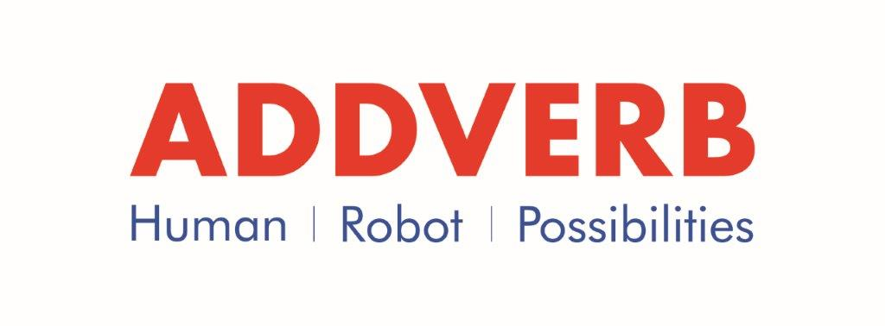
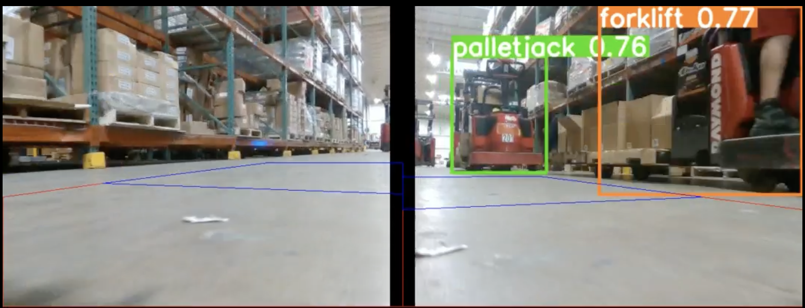
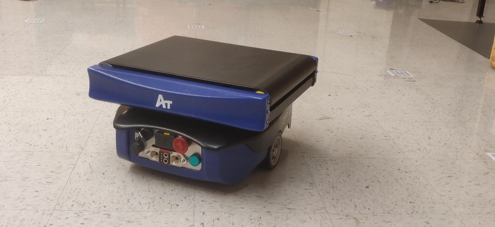
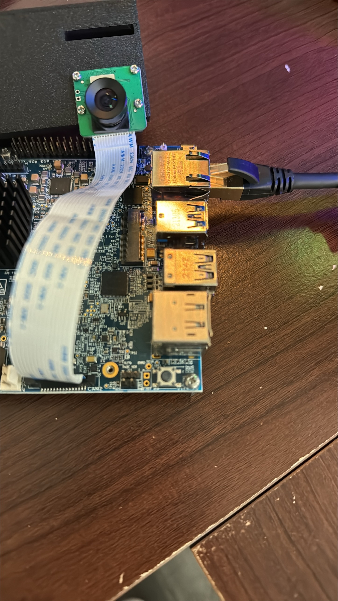

Aug. 2023 - Present
Worked on Robotics Software (ROS/C++/Python, Sensors, Motors), Embedded Software/Firmware(Yocto, Linux, Device Tree), Computer Vision (Stereo Depth Estimation, MIPI Cameras), Machine Learning (YOLOv8 Object Detection), Carrier Board + SMARC bringup and Troubleshooting robots at project sites (Docker/ROS/Foxglove/SICK Safety Designer)


Trained YOLOv8 on custom warehouse dataset with Ultralytics, Roboflow, Tensorflow and used it on Intel Realsense Cameras.

Implemented EKF State Estimation using IMU, Barcode Sensor data and Odometry, Battery Management System (BMS) driver, PID Controller, modifying stack to communicate with Fleet Management System (FMS).

Developed ROS/C++ code for Stereo Depth Estimation using TDA4VM's Stereo Depth Engine accelerator.
Brought up various interfaces on Intel x86_64 as well as ARM64 SMARCs. Modified Device tree and built Yocto Linux BSP. Ran C++ stack on Carrier Board + SMARC setup.